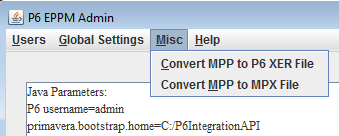

Имеем Oracle Primavera P6 EPPM 8.2 и Microsoft Project 2010. В какой-то момент перестает работать импорт из Project. Какими средствами можно восстановить работу импорта? Компания Oracle оставила наш запрос без внимания.
Временно работающие и неработающие решения следующие:
Буржуи пишут еще один вариант. Есть сторонняя программа Primavera P6 EPPM Administration Tool, загадочной компании EPPMSoft Inc. Описание этой программы здесь:
http://www.eppmsoft.com/articles/p6eppm_admin/P6EPPM_Admin_doc.php
Стоимость программы на сайте не указана. Распространяется 30-ти дневная триальная версия. В ней есть конвертор из MPP в XER файл:

Можно попробовать воспользоваться ей.